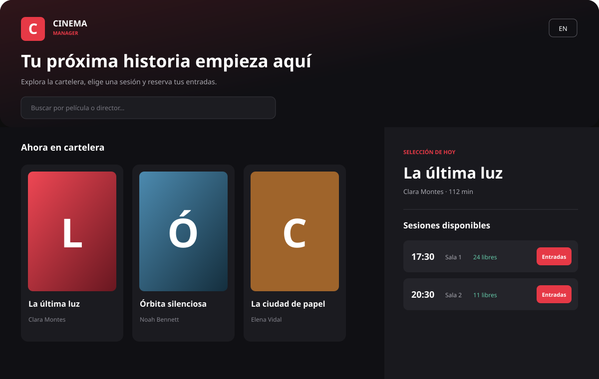

A visual rebuild
A modern dark cinema interface made with JavaFX, FXML and CSS.
FROM CONSOLE TO DESKTOP
A bilingual cinema programme built with Java 21, JavaFX, FXML and a tested, layered architecture.

A modern dark cinema interface made with JavaFX, FXML and CSS.
Search, sorted screenings, seat limits and locally persisted bookings.
Bilingual, tested with JUnit and built automatically by GitHub Actions.
THE EVOLUTION
The first commit preserves the console submission. The current edition shows how the same object-oriented foundation can evolve into maintainable product code.